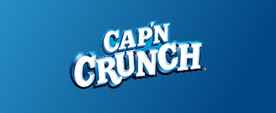

How the Sponsorship Works
The creator promotes the brand during their live stream while engaging their audience through branded interactive experiences.
A sponsorship package is integrated directly into the broadcast, featuring custom overlays, branded scenes, takeovers, and alerts designed to complement the creator's content while maintaining their unique on-stream identity.
Throughout the stream, branded elements appear at key moments to reinforce campaign visibility and create natural touchpoints with the audience. Alerts and visual effects help highlight viewer interactions, making the sponsorship feel like an organic part of the live experience rather than an interruption.
The result is a seamless integration that increases brand awareness while preserving audience engagement and the creator's authentic connection with their community.


A branded full-screen animated takeover that temporarily takes over
the live stream to deliver a high-impact sponsorship moment.
A branded full-screen animated
takeover that temporarily takes over
the live stream to deliver a
high-impact sponsorship moment.
Activated through a chat command or
automatically triggered on a scheduled timer.
Activated through a chat command
or automatically triggered
on a scheduled timer.


Animated on-stream graphics that provide
real-time visual feedback when key stream events occur.
Animated on-stream graphics
that provide real-time visual
feedback when key stream
events occur.
Alerts are dynamically populated with live data, displaying viewer
names and event information such as follows, subscriptions, donations,
and other community interactions.
Alerts are dynamically populated
with live data, displaying viewer
names and event information such
as follows, subscriptions, donations,
and other community interactions.


A collection of animated broadcast graphics used as waiting
and transition screens throughout the live stream experience.
A collection of animated broadcast
graphics used as waiting
and transition screens throughout
the live stream experience.
The package includes three scenes:
Starting Soon, Be Right Back, Stream Ended.
The package includes three scenes:
Starting Soon, Be Right Back,
Stream Ended.